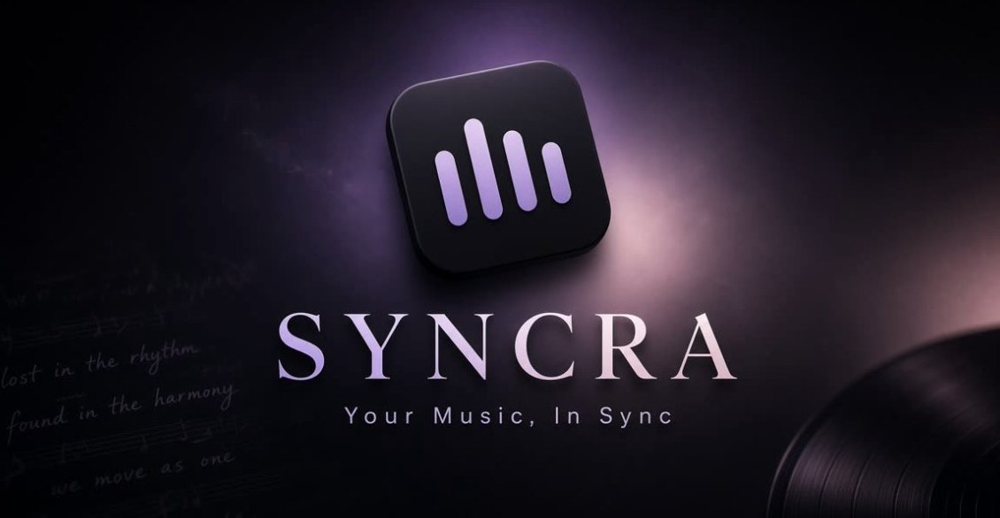

Logic Pro × iPhone・iPad
Logic の曲を、
みんなで仕上げる。
Mac の Logic Pro の音を、同じ Wi-Fi の iPhone・iPad でそのまま聴ける。ループ・ソロ・位置つきメモで、確認と修正の相談がその場で進みます。
Mac 版 0.1.2 (3)（Apple の公証済み・自動更新あり）／SHA-256: 2644c5f8601d60f189f837a247a14987331ef1a36d54d5e8f1bf5549ba486aaa

Features
できること
圧縮しない音を、同じ Wi-Fi で。波形を見ながら聴きたい所へ。
波形をなぞってループを決め、A・B・C に覚えて呼び出し。
聴いている位置にメモ。押すと Mac の再生ヘッドが飛びます。
メッセージ・チェックリスト・写真と動画の添付。
How it works
はじめかた
ダウンロードした ZIP を開き、SYNCRA を「アプリケーション」フォルダへ移します。Apple の公証済みなので、そのまま開けます。
SYNCRA を開き、Apple でサインイン、またはメールでアカウントを作ります。無料体験は 7 日間です。
Logic の Stereo Out にプラグイン「SYNCRA Monitor」を挿します。これで Logic の音が iPhone・iPad へ送られます。
iPhone・iPad で SYNCRA を開き、Mac に表示される QR コードか 6 桁のコードを入力します。Mac と同じ Wi-Fi につないでおきます。
波形で聴きたい所へ移動し、ループとソロで繰り返し確認。気になった所はその場でメモを残し、メンバーと相談します。
Using SYNCRA
使い方
圧縮しない 32bit float で届きます。全体の波形を見ながら、聴きたい所へ移動。10 秒の前後移動や、LIVE への復帰もワンタップです。ステレオ／モノ／左／右の切り替えと、遅延の表示に対応しています。
波形をなぞるだけで範囲を決められます。A・B・C に覚えておけば、押すだけで呼び出せます。Logic のサイクルと連動するので、Mac を触らずに繰り返し聴けます。
iPhone・iPad からトラックのソロを切り替えられます。ソロ中のトラックは、色分けした波形で重ねて表示されます。
聴いている位置に共有メモをワンタップで追加。小節・拍でも、分・秒でも指定できます。メモやメッセージの位置を押すと、Mac の Logic の再生ヘッドがそこへ移動します。
プロジェクトのメンバーと、メッセージ・共有メモでやり取り。写真や動画も添付できます。共有メモはチェックリストにでき、「直す所」の確認漏れを防げます。メンバーの今（オンライン・再生位置）もひと目で分かります。
Video
解説動画
Pricing
料金
モニター・ループ・ソロ・メモ・メッセージ・写真と動画・音の共有・プロジェクトの作成。
7 日間の無料体験があります（自動で有料に切り替わりません）。
日本以外：月額 12.99 米ドル／年額 129.99 米ドル（税別）
iPhone・iPad のモニター・共有メモ・再生ヘッドの操作。メッセージ・写真と動画・音の共有・プロジェクトの作成は使えません。iPhone・iPad の App 内課金でのみ購入できます。
Mac 版の有料プランは、アプリの中で購入します（決済は Paddle が行います）。解約すると次回以降の更新の課金が止まります。返金の方針／特定商取引法に基づく表記
FAQ
よくある質問
iPhone・iPad で音が聴こえません
Mac の Logic で、Stereo Out に「SYNCRA Monitor」を挿してあるか確認してください。Mac と iPhone・iPad を同じ Wi-Fi につなぎ、iPhone・iPad の「設定」→「プライバシーとセキュリティ」→「ローカルネットワーク」で SYNCRA をオンにしてください。
iPhone・iPad だけで使えますか？
音を聴くには、Mac 版 SYNCRA と Logic Pro が必要です。iPhone・iPad だけでは音は聴けません。
無料体験は自動で有料になりますか？
なりません。7 日間・1 人 1 回・保存 1GB までの体験です。有料プランを契約しなかった場合、体験中のクラウド上のプロジェクトは終了から 30 日後に削除します。
解約・返金は？
解約すると、次回以降の更新の課金が止まります。iPhone・iPad の App 内課金は、「設定」→ 自分の名前 →「サブスクリプション」から解約できます。返金は返金の方針をご覧ください。
アカウントを削除したい
アプリの「設定」→「アカウントを削除」から行えます。
Mac 版：macOS 14 以降・Logic Pro
iPhone・iPad 版：iOS 17 / iPadOS 17 以降（Mac 版 SYNCRA と同じ Wi-Fi で使います）